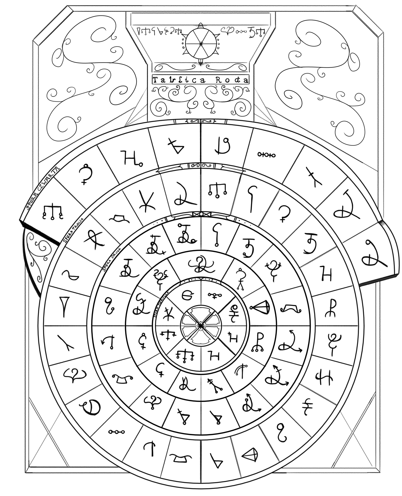

Zaklinanie to bardzo szeroki temat, a że zaklinaczem również nie jestem to przytoczę wam parę niezbędnych informacji jeśli chcecie zacząć swoje początki w nauce zaklinania.
Tablica Roda
Tablica Roda jest ważnym elementem zaklinaczy, którzy mierzą wysoko. Taką tabliczkę można uzyskać w gildii zaklinaczy na wysokim poziomie nauki, gdyż to wtedy dopiero młody zaklinacz zataja tajemnice magii dokładnie. Wszyscy inni, którzy nazywają siebie zaklinaczami rozumieją tylko niektóre pojedyncze symbole i przepisują zaklęcia, które są już dla nich znane i rozumieją co robią.
Ale co robi taka tabliczka Roda? Już wam wyjaśniam.
Tablica Roda służy do łatwego odczytu symboli boskich i poprawnego przepisania ich na przedmiot lub kartkę papieru. Jak widać na obrazku przedstawiającym tablice mamy tutaj cztery sfery.
- Sfera Pierwsza i Druga — są elementami znaków specjalnych, co oznacza, iż używa się ich w wyjątkowych sytuacjach, słowach i zdaniach. Niektóre z nich są rzadko wykorzystywane, gdyż bardziej służą jako potrzebne do opisu miejsca lub imienia.
- Sfera Trzecia i Czwarta — są sferami, które opisują symbole zwykłe. Są one częstymi symbolami lub tak zwanymi symbolami pospolitymi, które występują częściej niż symbole specjalne.
Tyle jestem wam w stanie objaśnić na ten moment, jeśli chodzi o zaklinanie. Gdybyście chcieli zgłębić swoją wiedzę na ten temat zalecam do poszukiwania nauczycieli w gildiach bądź uniwersytetach.
Nauka jednak może być dla was bardzo męcząca, ponieważ pojmowanie języka bogów nie jest aż takie proste jak wam się może wydawać. Osobiście uważam, że jest to warte zachodu i awans ze zwykłego zaklinacza na zaawansowanego zaklinacza jest bardzo miłym uczuciem i jestem pewien, że duma będzie was rozpierać kiedy spojrzycie za siebie i uświadomicie sobie ile przeszliście, żeby stać się tym, kim się staliście.